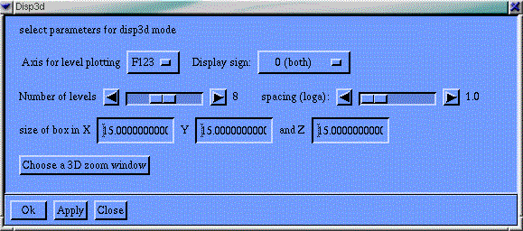
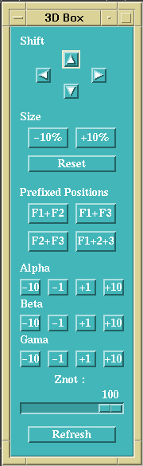
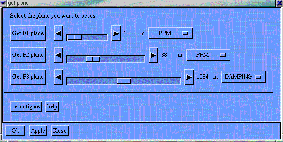
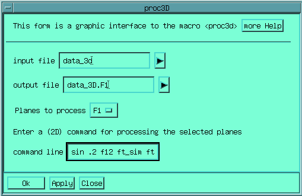

When 3D processing has been chosen, either with the env_proc23d.g
macro, or the Proc 3D option in the Mode menu, 3
additional menus are inserted in the menu bar. The first menu is for
processing 3D data-sets which can be held into the central memory,
the second is specific of 3D display, and the third one is for
processing and displaying file which are too big for fitting into the
central memory, and thus have to be processed on file.
In 3D
processing F3 axis always refer to the acquisition axis, F1 refers to
the axis which is stored with the slowest increment, and F2 to the
intermediate axis. Thus, 3D can be seen a series of F2-F3 planes.
Note that this definition depends only on how the data-set was
stored, and not on the order of the incremented delays in the
sequence.
Naming of planes is done by giving the axis orthogonal
to the plane rather than the axes in the planes; for instance the
planes holding the F1 and F3 planes are noted F2 planes.
This menu holds most of the commands for processing 3D experiments
in-memory, as it is done for 2Ds. This can be done only for not too
big data-sets. In the contrary case, one has to resort to on-file
processing (see below). The Gifa central memory is determined at
compile time, and several versions of the program, corresponding to
different size of the memory, should be available on your machine,
check the installation manual.
In the case of in-memory
processing, commands are very similar to what is done in 2D.
Largest Set
This button simply call the largest_3d macro which gives you example of data-sets which fit into the memory.
ZeroFill F1
Simply realizes extension of the size in F1, to the next power of two. Done with the CHSIZE command.
ZeroFill F2
Realizes extension of the size in F2, to the next power of two. Done with the CHSIZE command.
ZeroFill F3
Realizes extension of the size in F2, to the next power of two. Done with the CHSIZE command.
Burg3d
Performs the burg extension of the data-set in F1 or F2 using the burg3d macro command.
ft_Seq (F3)
Performs in the F3 (acquisition) axis, the Fourier transform of a data-set acquired in sequential mode.
ft_Sim (F3)
Performs in the F3 (acquisition) axis, the Fourier transform of a data-set acquired in simultaneous (complex) mode.
ft_tppi (F2)
ft_sh (F2)
ft_sh_tppi (F2)
ft_tppi (F1)
ft_sh (F1)
ft_sh_tppi (F1)
Performs in the F2 or F1 axis, the Fourier transform suitable for data-sets acquired with different protocols, see the Proc 2D menu for details.
Phase
Permits to apply a phase correction in a given spectral axis. Equivalent to the PHASE command.
Real...
Permits to throw away the imaginary part associated with a given axis (F1, F2 or F3). Equivalent to the REAL command
Real F123
Permits to throw away all the imaginary part associated to a fully hypercomplex data-set. Equivalent to the REAL F123 command.
Modulus
Computes the modulus of fully hypercomplex data-set. Equivalent to the MODULUS command.
This menu holds all the functions for displaying the 3D data-set held into memory
disp3d on
Opens the 3D display window, equivalent to the DISP3D 1 command.
parameters...

Opens
a form for setting 3D display parameters. actually calls the
disp3d_form macro.
Axis
for level plotting determines along which axes (F1, F2, F3 or
combinaitions) the contour will be plotted
Display sign determines
wether only positive or negative levels should be displayed
Number
of levels and spacing are standard 2D contour plot
parameters (see LEVEL or LOGA)
Size of box determines the
CX, CY and CZ parameters
Choose a zoom window starts a
utility helping in defining the 3D zoom window
control box
Opens
a control box which permit to interactively chose the view point of
the 3D display. Equivalent to the CHECK3D 1
command.
This control box permits to change its position and
size within the window, to set the orientation of the spectral cube,
to change the perspective of the display, and finally to recompute a
display with the Refresh button.
refresh
In contrast with the
other windows, the 3D display is not automatically refreshed whenever
a display parameter changes. This has been chosen because of the time
that this refresh might take. Clicking on this button will start the
3D display. Equivalent to the REF3D
command, or to the Refresh button on the CHECK3D control box.
choose zoom...
This button starts the zoom3di macro which permits to interactively choose a zoom window for the current 3D display.
plane...
Calls the PLANE command, which loads the 2D buffer with a plane extracted from the 3D.
diag...
Calls the DIAG command, which loads the 2D buffer with a diagonal plane extracted from the 3D
vertint
Starts the vertint macro which permits to interactively examine 1D spectra by clicking on a orthogonal 2D plane.
planeint
Starts the planeint macro which permits to interactively examine planes by clicking on a orthogonal 1D spectrum
Proj F1 ...
Proj F2 ...
Proj F3 ...
Compute the projection plane along the corresponding axis. You will get prompted for the projection mode Skyline / Mean.
When a data-set is too big to be processed in-memory, it is
possible to realize the processing on-file. This is done with a
special set-up in Gifa, the "cache" system, which permits
to access files in an optimal fashion, (see below Working
On File rather than In Memory chapter).
3D processing on file
is done by having an input file and an output file, planes are loaded
from the input file, processed in memory as regular 2D experiment,
and then copied on the output file.
Easy 3D
This button launches a form which simplifies the 3D processing. Each step is detailled through a 2D processing step, using easy2d. The set-up can then be used for direct computation as well as to store a macro that will realise the process in a latter stage. See the details in the chapter Handling of 2D and 3D Data-sets Check also the on-line help.
Join data-set...
This entry permits to realize the first operation to be done, namely connecting to the input file. This is equivalent to the JOIN command. Once a data-set has been JOINed, it is possible to display internal parameters, load 1D or 2D from it, or even load a 3D region form it. Note that you can issue that command to several files, thus being JOINed to more than one file. However all the command will refer to the last JOINed file.
Dataset parameters
That button simply runs the dataset macro, which displays all the spectral parameters of the current JOINed data-set. Note that since the header holding all the parameters is in ASCII format, one can simply make more filename to see the value of all the parameters.
list all files
This button lists the names of all the files which are currently JOINed.
disjoin
Once a file have been JOINed it must be DISJOINed in order to release completely the internal memory.
get plane
This menu entry permits to load a plane extracted from the currently JOINed 3D dataset. For instance it can useful to load the first F1 or F2 planes to determines the optimum processing parameters, and phases, before going to full 3D processing. It can used also to look at planes in a processed data-set. It is equivalent to using the GETC command in DIM 2 mode.

The
box permit to access directly planes along the 3 axes. You can choose
planes in index as well as in PPP or Hz. Hit reconfigure when
changing the unit to be used along one axis.
get region
This
ones permits to load in the central memory a portion of the currently
JOINed data-set. You will be prompted for the coordinates fits point
(F1, F2, F3) and then for the coordinates of the last point (F1, F2,
F3). It is equivalent to using the GETC
command in DIM 3 mode.
get vertical
After having loaded a 2D plane from the currently JOINed 3D, you can acces 1D 'verticals' with this command. Simply clicking in the 2D plane brings the 1D line in the 1D window.
3D proc...
This button creates a form which permits to process the 3D data-set on-file. One has to enter the name of the input and output files, the axis along which the processing will be done, and finally the command line that will be applied to each plane of the 3D. This command line will be executed in 2D mode on each of the planes; thus typical 2D command should be given here.

The
forms actually calls the proc3d
macro.
Proj F1 ...
Proj F2 ...
Proj F3 ...
Compute the projection plane along the corresponding axis. You will get prompted for the projection mode Skyline / Mean
Compute all Proj
Compute the three projection planes along the three corresponding axis, and put the result in the first planes of each axis. Thus the (say) F1 projection is found has the first plane in F1. This command has to be done only once on the data-set.
strip_file
Construct a strip plot from the current 3D and load it into the 2D buffer. Uses the currently JOINed 3D and the content of the 2D peak table.
strip_plot
Construct a strip plot from the current 3D and send it to a plot file. Permits to plot on several pages. Uses the currently JOINed 3D and the content of the 2D peak table.